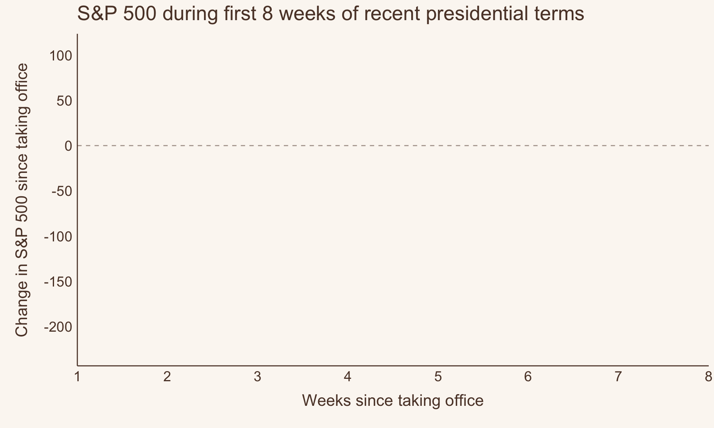
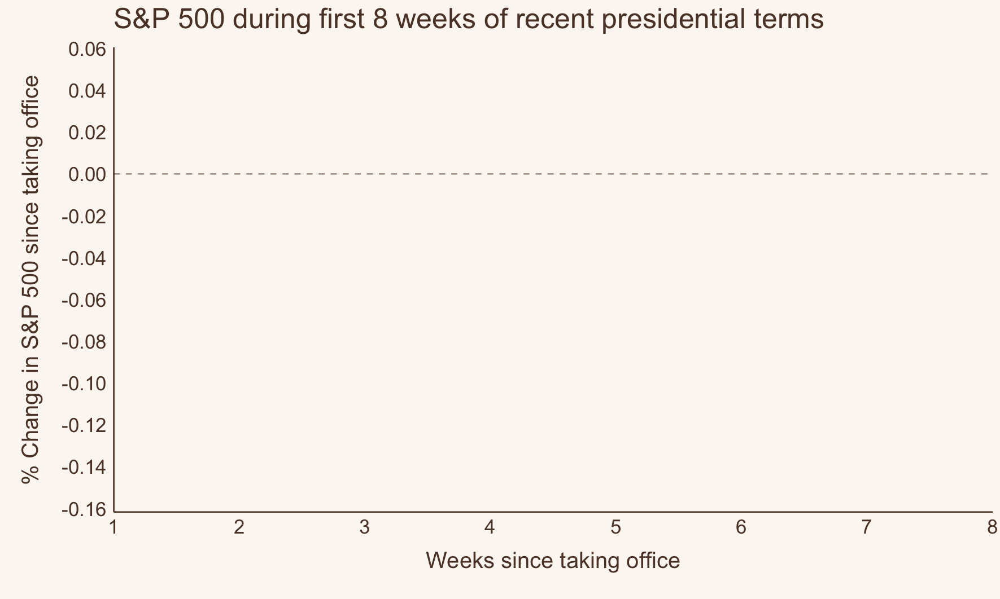

I also edited the title (original title: How has the market historically responded to the first 2 months of a president’s term?)
How does Trump’s first 8 weeks compare to other recent presidents?
It’s no secret that the market ain’t looking so hot under President Trump so far. Who’s all saying it:
CNN: “Trump’s week of whiplash rattles markets, allies and his own administration”
CNBC: “Trump says he’s not even looking at stock market, tariffs will make U.S. ‘very strong’”
Business Insider: “It’s not just tariff anxiety. The market’s whole bull case under Trump has been turned on its head.”
NBC: “Stocks fall as markets grapple with Trump’s rapid shifts in tariff policy”
But, based on what my not-very-tenured memory can recall, a lot of presidents have suffered market volatility during the start of their terms. But, I had no data to back that up. So…
I thought this was a great opportunity to try to:
Look at and track down data I don’t usually interact with (market data, politics)
This scrapes financial data during a user-specified time frame -– I chose 1980 and on. You can choose any stock or index you’re interested in. I’ve chosen to use the S&P 500, which is labeled as ^GSPC (I don’t know why because I don’t know anything about “the market” really, but that’s just how it is).
Libraries & themes
library(tidyverse)library(quantmod)library(patchwork)library(data.table)library(colorspace)library(ggrepel)library(gganimate)# library(gifski) # can't call this due to environment issueslibrary(av) library(gt)background <-"#FBF7F2"text <-"#5C4033"text_size <-14title_size <-16my_theme <-theme_classic() +theme(axis.text =element_text(size = text_size, color = text),axis.title.y =element_text(size = title_size, face ="bold", color = text,margin =margin(0, 10, 0, 10) ),axis.title.x =element_text(size = title_size, face ="bold", color = text,margin =margin(10, 0, 10, 0) ),axis.line =element_line(color = text),axis.ticks =element_blank(),legend.text =element_text(size = text_size, color = text),legend.title =element_text(size = text_size, color = text),panel.background =element_rect(fill = background,color = background ),plot.background =element_rect(fill = background,color = background ),plot.title =element_text(size =20, face ="bold", color = text),legend.background =element_rect(fill = background,color = background ) )theme_set(my_theme)
data(presidential) # from ggplot2presidential %>%gt()
name
start
end
party
Eisenhower
1953-01-20
1961-01-20
Republican
Kennedy
1961-01-20
1963-11-22
Democratic
Johnson
1963-11-22
1969-01-20
Democratic
Nixon
1969-01-20
1974-08-09
Republican
Ford
1974-08-09
1977-01-20
Republican
Carter
1977-01-20
1981-01-20
Democratic
Reagan
1981-01-20
1989-01-20
Republican
Bush
1989-01-20
1993-01-20
Republican
Clinton
1993-01-20
2001-01-20
Democratic
Bush
2001-01-20
2009-01-20
Republican
Obama
2009-01-20
2017-01-20
Democratic
Trump
2017-01-20
2021-01-20
Republican
Notably, the dataset is missing some features I care about:
It stops at Trump’s 1st term (2021)
It doesn’t separate out 2nd terms
So, I had to manually enter the rest of the data myself. Open this code fold at your own risk, it’s not pretty.
Now, I will need to match dates within the market data to each president’s terms.
To do this, I will expand the presidential data into a long format where there is a single column of the sequential dates in each term. I’m going to write a custom function to help me out here.
(🤔 In retrospect, I did not need to write this function because there are no gaps between terms… but alas, this problem generalizes to other messier data like these, so will include it in case it’s helpful to anyone reading).
# Function to generate date sequences for each presidentexpand_dates <-function(start_date, end_date) {# If the end date is NA, use today's dateif (is.na(end_date)) { end_date <-Sys.Date() }# Generate the sequence of datesseq(start_date, end_date, by ="day")}# Expand the data frameexpanded_df <- presidential %>%rowwise() %>%mutate(date =list(expand_dates(start, end))) %>%unnest(date) %>%ungroup()
This data didn’t need much cleaning, but I did notice that the gspc object doesn’t have traditional row.names–instead you need to use index() if you want to extract the dates in the rows.
I also need to generate a variable where presidents will have their party colors when plotted, with the added detail that more recent presidents have darker shades of that color.
Cleaning up the data and merging in president information
gspc2 <-as_tibble(gspc)gspc2$date <-as.Date(index(gspc))expanded_gspc <- gspc2 %>% dplyr::select(GSPC.Close, date) %>%left_join(., expanded_df %>% dplyr::select(name, party, date, start) %>%rename(start_of_term = start))recent_pres <- expanded_gspc %>%filter(start_of_term >=min(gspc2$date)) %>%mutate(gspc_log =log(GSPC.Close)) %>%group_by(name) %>%# creating a variable that will be used to have party colors where more recent terms have darker valuesmutate(time =as.numeric(as.Date("1970-01-01") - start_of_term),time_party =if_else(party =="Republican",-1* time /150, # re-scaling time /200 ) )
The market since 1980’s
Let’s just get a sense of what “the market” has done over the last 45 years.
It’s generally increased over time. We can see that the recession that plagued Bush after Clinton left office, and the post-Bush Jr & into Obama recession ~ 2009 (yay! that was when I graduated college and entered the workforce.) COVID related dips in the 2020s were brief, but pretty dramatic.
Figure 1. S&P 500 since 1980’s to today (natural log scale used to improve readabilty)
Point changes in market data
Trump’s been in office for almost 2 months, so I’ll be looking at the first 8 weeks of data for every president since 1980.
Overall, the first 8 weeks in Trump’s 2nd term have shown the hardest falls in S&P 500 value compared to any of the presidents here. 2nd in the running is Bush Jr.’s 1st term, followed by Obama’s 1st term.
Figure 2. Changes in S&P 500 over the first 8 weeks of each president’s term (1980 and on)
Now let’s animate it

Animated trajectory of S&P 500 during each presidents first 8 weeks
Code
# Save the animation as a .gif fileanim_save("snp-animated.gif", p1 +geom_label(aes(label = name, color = time_party)) +transition_reveal(days_from_start),fps =10,height =15,width =25,units ="cm",res =180,end_pause =30,renderer =gifski_renderer())#
Code
# Save the animation as a .mp4anim_save("snp-animated.mp4", p1 +geom_label(aes(label = name, color = time_party)) +transition_reveal(days_from_start),fps =10,height =15,width =25,units ="cm",res =180,end_pause =30,renderer =av_renderer())
Edited addition: Percent changes in market data
I received this comment from @louisaslett.bsky.social on blueky that was very insightful and inspired me to take a closer look at these data and compare the results above with percent changes.
Nice animation, thanks! Is it possible to show % change? For example, index was around 1300 for Bush Jr vs around 6000 now, so the magnitude perhaps not that directly comparable between temporally distant presidents?
There is a steady increase in S&P 500 over time ( Figure 1). So, each president has a different baseline starting market value that they are working with. Meaning that, as an example, a 1 point reduction for one president who started with the market at 100 (1% reduction) might not mean the same thing as a 1 point reduction for another president who started with the market of 50 (2% reduction). So, scaling these changes based on their starting value (e.g, using percent change) might make more sense.
Now, this was philosophically interesting to me (in the mathematical sense) – and something that I did consider when I first wrote this post, but convinced myself against it. My reasoning being: earlier presidents will have lower baselines overall simply as a function of time, irrespective of the president themselves. Which led me to believe that presidents of the past would be unfairly penalized.
But, if that were true, we’d expect to see percent changes to be a function of time as well – that is, earlier presidents would have greater percent changes compared to later presidents.
And we can see ( Figure 3 ) that that just isn’t true! So, % change does seem to be pretty time invariant!
While the S&P 500 point unit data is useful, I can also now see why percent change is useful! So, let’s look at the percent changes in S&P 500 for comparison.
Figure 3. Percent change in S&P 500 broken down by term start year
Why does this work so well? S&P 500 trends are log-linear
In my original posting of this, I had the instinct to report this on the natural log scale to help with readability (Figure 1 ). But I didn’t take away something important about the data: while the S&P is increasing over time, it’s increasing much faster now than it was in the past.
Figure 4. S&P 500 since 1980’s to today (natural scale)
This means that the within-term variability is also much higher for more recent presidential terms. So, the range of change that was even possible for Reagan in 1981 was much smaller than the range of possible change for say Biden in 2021.
The S&P 500 closed at 132 on Reagan’s first day in office. He literally could not havereduced the S&P 500 by more than 132. Trump’s present day reduction is 200 points, with a starting point of ~6,000, so of course the point reductions are not an apples-to-apples comparisons.
So, as per one of my previous posts, I’ll use log transform to estimate percent change. Log scaling is very good at dealing with this type of scaling issue.
Percent changes in the market
And here are the results!
Figure 5 shows the percent changes in the first 8 weeks of these same presidential terms. These results look quite different from the absolute reductions ( Figure 2) ! Now, the notable stand outs are Bush Jr’s & Obama’s 1st terms, with Trump’s 2nd term coming in third worst performing so far.
Figure 5. Percent canges in S&P 500 over the first 8 weeks of each president’s term (1980 and on)
Let’s look more closely at Bush and Obama’s terms ( Figure 6) to see why these results look so different.
Bush Jr’s 1st term was generally considered to be the start of a recession – whether or not that was “his fault” is not for me to debate because that’s outside the scope of my knowledge and this post. But, it’s clear that there were legitimate, persistent declines during his first term.
And Obama’s 1st term actually started at the tailend of Bush Jr’s 1st term recession. This means that his starting value was dramatically lower than that of the presidential terms that book-end him. So, compared to his peers (?) at that time, he is (numerically) at a disadvantage.
Under Obama’s 1st term, we actually see improvements in the market starting at week 7. And, we can clearly see from the overall trajectory of the S&P during his two terms ( Figure 6 ) that the market turned around.
So, percent change does indeed take innto accounnt different baseline starting values very well – whether they can be interpreted causally with a given term is a much more complicated question.
Figure 6. S&P 500 during Bush Jr’s and Obama’s terms
Now let’s animate it again!

Percent changes in S&P 500 by presidential term
Code
# Save the animation as a .mp4anim_save("snp-animated-pct.mp4", p1_pct +geom_label(aes(label = name, color = time_party)) +transition_reveal(days_from_start),fps =10,height =15,width =25,units ="cm",res =180,end_pause =30,renderer =av_renderer())#| eval: false# Save the animation as a .gifanim_save("snp-animated-pct.gif", p1_pct +geom_label(aes(label = name, color = time_party)) +transition_reveal(days_from_start),fps =10,height =15,width =25,units ="cm",res =180,end_pause =30,renderer =gifski_renderer())
Conclusions & learnings
Interpreting market data is complex
If I were to interpret these data in a meaningful way I would say: “Consult a real expert.”
But, if you want my opinion here goes:
Market data is very challenging to summarize (both quatitatively and qualitatively) into a single “take away”. The data should be explored in many ways, not only as market points, but also their relative scale, and within the broader context of American politics.
Yes. The market is falling under Trump’s 2nd term. Trump has shown the most dramatic point reduction in his first 8 weeks since Reagan.
However, the magnitude of these changes are less extreme when you consider where the market started (at the highest baseline value of any president so far).
Under percent change, Bush Jr. and Obama’s 1st terms see the worst reductions relative to their starting values
It seems to me that drops in Bush Jr.’s term is indicative of the onset of a real recession.
By contrast, Obama’s 1st term decline is more of an ‘outlier’ here in that the reductions are carry overs from another smaller recession during Bush Jr’s 2nd term
I learned so much from making this post!
Blogging is a great way to learn and learn from people
How to think (more) critically about market changes
The range of market values that are possible has increased over time
It’s important to consider the changes in the context of both point scales and percent change
Starting values are important to understanding the relative magnitude of changes
However, starting values can also be carryovers from previous terms (Obama’s first term)
Citation
BibTeX citation:
@online{graves2025,
author = {Graves, Jess},
title = {What Happens to the Market in the First 2 Months of a
President’s Term?},
date = {2025-03-09},
url = {https://JessLGraves.github.io/posts/2025-03-09-presidents-snp/},
langid = {en}
}
---title: "What happens to the market in the first 2 months of a president's term?"description: "Using {quantmod} & {gganimate} to explore market changes under recent presidents."author: - name: Jess Gravesdate: 03-09-2025date-modified: last-modifiedexecute-dir: projectcrossref: fig-title: '**Figure**' tbl-title: '**Table**' fig-labels: arabic tbl-labels: arabic title-delim: "."link-citations: trueexecute: echo: true warning: false message: falsecategories: [animated figure, data visualization] # self-defined categoriesimage: preview-image.pngdraft: false # bibliography: references.bibnocite: | @*# csl: statistics-in-biosciences.cslbibliographystyle: apacitation: true---::: callout-noteEdited to include percent change analysis (See @sec-percent-changes ). Inspired by a [comment](https://bsky.app/profile/louisaslett.bsky.social/post/3ljzsv3h7422d) from [\@louisaslett.bsky.social](https://bsky.app/profile/louisaslett.bsky.social) on bluesky.I also edited the title (original title: *How has the market historically responded to the first 2 months of a president’s term?*):::# How does Trump's first 8 weeks compare to other recent presidents?It's no secret that the market ain't looking so hot under President Trump so far. Who's all saying it:- [CNN](https://www.cnn.com/2025/03/08/politics/trump-whiplash-tariffs-ukraine-musk/index.html): "Trump’s week of whiplash rattles markets, allies and his own administration"- [CNBC](https://www.cnbc.com/2025/03/06/trump-says-hes-not-even-looking-at-stock-market.html): "Trump says he’s not even looking at stock market, tariffs will make U.S. ‘very strong’"- [Business Insider](https://www.businessinsider.com/trump-deregulation-policy-tariffs-market-crypto-antitrust-enforcement-gdp-growth-2025-3): "It's not just tariff anxiety. The market's whole bull case under Trump has been turned on its head."- [NBC](https://www.nbcnews.com/business/markets/stocks-fall-even-trump-gives-mexico-one-month-reprieve-tariffs-rcna195160): "Stocks fall as markets grapple with Trump's rapid shifts in tariff policy"But, based on what my not-very-tenured memory can recall, a lot of presidents have suffered market volatility during the start of their terms. But, I had no data to back that up. So...I thought this was a great opportunity to try to:1. Look at and track down data I don't usually interact with (market data, politics)2. Practice data vis skills3. Learn how to use {[gganimate](https://gganimate.com)}! - Surprise! I had issues getting this to export, but using {[gifski](https://cran.r-project.org/web/packages/gifski/index.html)} to render ended up resolving my issue.# The data## Presidential dataI have two datasets to work with:1. The [`presidential`](https://ggplot2.tidyverse.org/reference/presidential.html?q=presidential#ref-usage) dataset from {[`ggplot2`](https://ggplot2.tidyverse.org)} - The `data(presidential)` has the start and end dates for every president since Eisenhower and their party affiliation2. S&P 500 data from {[`quantmod`](https://www.quantmod.com)} - This scrapes financial data during a user-specified time frame -– I chose 1980 and on. You can choose any stock or index you're interested in. I've chosen to use the S&P 500, which is labeled as `^GSPC` (I don't know why because I don't know anything about "the market" really, but that's just how it is).```{r}#| code-summary: Libraries & themeslibrary(tidyverse)library(quantmod)library(patchwork)library(data.table)library(colorspace)library(ggrepel)library(gganimate)# library(gifski) # can't call this due to environment issueslibrary(av) library(gt)background <-"#FBF7F2"text <-"#5C4033"text_size <-14title_size <-16my_theme <-theme_classic() +theme(axis.text =element_text(size = text_size, color = text),axis.title.y =element_text(size = title_size, face ="bold", color = text,margin =margin(0, 10, 0, 10) ),axis.title.x =element_text(size = title_size, face ="bold", color = text,margin =margin(10, 0, 10, 0) ),axis.line =element_line(color = text),axis.ticks =element_blank(),legend.text =element_text(size = text_size, color = text),legend.title =element_text(size = text_size, color = text),panel.background =element_rect(fill = background,color = background ),plot.background =element_rect(fill = background,color = background ),plot.title =element_text(size =20, face ="bold", color = text),legend.background =element_rect(fill = background,color = background ) )theme_set(my_theme)``````{r}#| code-fold: falsedata(presidential) # from ggplot2presidential %>%gt()```Notably, the dataset is missing some features I care about:1. It stops at Trump's 1st term (2021)2. It doesn't separate out 2nd termsSo, I had to manually enter the rest of the data myself. Open this code fold at your own risk, it's not pretty.```{r}#| code-summary: 'Beware! manual data cleaning'presidential <- presidential %>%arrange(start) %>%rbind( .,tibble(name =c("Obama 2nd","Biden","Trump","Bush Jr. 2nd","Clinton 2nd" ),start =as.Date(c("2013-01-20","2021-01-20","2025-01-20","2005-01-20","1997-01-20" )),end =as.Date(c("2017-01-20","2025-01-20", NA,"2009-01-20","2001-01-20" )),party =c("Democratic","Democratic","Republican","Republican","Democratic" ) ) )presidential$name[presidential$name =="Bush"] <-c("Bush Sr.", "Bush Jr. 1st")presidential$name[presidential$name =="Trump"] <-c("Trump 1st", "Trump 2nd")presidential$name[presidential$name =="Clinton"] <-c("Clinton 1st")presidential$name[presidential$name =="Obama"] <-c("Obama 1st")presidential$end[presidential$name =="Clinton 1st"] <-as.Date("1997-01-20")presidential$end[presidential$name =="Obama 1st"] <-as.Date("2013-01-20")presidential$end[presidential$name =="Bush Jr. 2nd"] <-as.Date("2009-01-20")presidential <- presidential %>%arrange(start)presidential$name <-factor(presidential$name,levels = presidential$name)``````{r}#| label: tbl-data#| tbl-cap: Final presidential datasetpresidential %>%gt()```Now, I will need to match dates within the market data to each president's terms.To do this, I will expand the presidential data into a long format where there is a single column of the sequential dates in each term. I'm going to write a custom function to help me out here.(🤔 In retrospect, I did not need to write this function because there are no gaps between terms... but alas, this problem generalizes to other messier data like these, so will include it in case it's helpful to anyone reading).```{r}#| code-fold: false# Function to generate date sequences for each presidentexpand_dates <-function(start_date, end_date) {# If the end date is NA, use today's dateif (is.na(end_date)) { end_date <-Sys.Date() }# Generate the sequence of datesseq(start_date, end_date, by ="day")}# Expand the data frameexpanded_df <- presidential %>%rowwise() %>%mutate(date =list(expand_dates(start, end))) %>%unnest(date) %>%ungroup()``````{r}#| label: tbl-expanded-data#| tb-cap: Example rows of expanded datasetexpanded_df %>% dplyr::select(name, party, date) %>%filter(name %in%c('Eisenhower', 'Kennedy')) %>%group_by(name) %>%slice(1:5) %>%gt()```## Market dataHere I use `getSymbol()` from the {`quantmod`} package to get S&P 500 data, starting from `1980-01-01`, because I am not a masochist.```{r}#| code-fold: falsegspc <-getSymbols("^GSPC",auto.assign =FALSE,from ="1980-01-01")```This data didn't need much cleaning, but I did notice that the `gspc` object doesn't have traditional `row.names`–instead you need to use `index()` if you want to extract the dates in the rows.I also need to generate a variable where presidents will have their party colors when plotted, with the added detail that more recent presidents have darker shades of that color.```{r}#| code-summary: Cleaning up the data and merging in president informationgspc2 <-as_tibble(gspc)gspc2$date <-as.Date(index(gspc))expanded_gspc <- gspc2 %>% dplyr::select(GSPC.Close, date) %>%left_join(., expanded_df %>% dplyr::select(name, party, date, start) %>%rename(start_of_term = start))recent_pres <- expanded_gspc %>%filter(start_of_term >=min(gspc2$date)) %>%mutate(gspc_log =log(GSPC.Close)) %>%group_by(name) %>%# creating a variable that will be used to have party colors where more recent terms have darker valuesmutate(time =as.numeric(as.Date("1970-01-01") - start_of_term),time_party =if_else(party =="Republican",-1* time /150, # re-scaling time /200 ) ) ```# The market since 1980'sLet's just get a sense of what "the market" has done over the last 45 years.It's generally increased over time. We can see that the recession that plagued Bush after Clinton left office, and the post-Bush Jr & into Obama recession \~ 2009 (yay! that was when I graduated college and entered *the workforce*.) COVID related dips in the 2020s were brief, but pretty dramatic.```{r}#| code-summary: plot code #| label: fig-snp-over-time#| fig-cap: S&P 500 since 1980's to today (natural log scale used to improve readabilty)#| fig-width: 10#| fig-height: 6# label datasetpres_labels <- recent_pres %>%group_by(name, start_of_term, time_party) %>%arrange(name, start_of_term) %>%summarize(y.position =first(GSPC.Close)) # Figuresnp_over_time <- recent_pres %>%ggplot(aes(x = date,y =log(GSPC.Close),color = time_party,group = name )) +geom_line(linewidth =1.5) +scale_x_date(expand=c(0, 0.01),date_breaks ="5 years",date_labels ="%Y", limits =c(as.Date('1981-01-01'), as.Date('2025-12-31')) ) +scale_y_continuous(breaks = scales::pretty_breaks(10),# limits = c(-300, 150) ) +theme(legend.position ="none") +labs(x ="",y ="S&P 500 at closing\n(natural log scaled)",color ="",title ="S&P 500 since the 1980's" ) +scale_color_continuous_diverging(palette ="Blue-Red",l1 =20, l2 =90,p1 =1, p2 =1,alpha =1 ) +geom_label_repel(data = pres_labels,aes(x = start_of_term,y =log(y.position),label = name,color = time_party ),nudge_y = .75,max.overlaps =10 )snp_over_timeggsave("preview-image.png", snp_over_time,units ="cm",height =30*.6,width =30)```# Point changes in market dataTrump's been in office for almost 2 months, so I'll be looking at the first 8 weeks of data for every president since 1980.Overall, the first 8 weeks in Trump's 2nd term have shown the hardest falls in S&P 500 value compared to any of the presidents here. 2nd in the running is Bush Jr.'s 1st term, followed by Obama's 1st term.```{r}#| label: fig-changes#| fig-cap: Changes in S&P 500 over the first 8 weeks of each president's term (1980 and on)#| fig-height: 6#| fig-width: 9weeks_in_office <-8from_start <- recent_pres %>%group_by(name) %>%arrange(date) %>%mutate(start =first(GSPC.Close),change = GSPC.Close - start,days_from_start =as.numeric(date -first(date)) ) %>%# 7-day rolling averagemutate(mean_change =frollmean(change, 6), ) %>%ungroup()from_start_first_8_weeks <- from_start %>%filter(days_from_start <=7* weeks_in_office)pres_labels_end <- from_start_first_8_weeks %>%group_by(name) %>%filter(date ==last(date))p1 <- from_start_first_8_weeks %>%ggplot(aes(x = days_from_start,y = mean_change,color = time_party,group = name )) +geom_hline(yintercept =0,linetype =2,color = text,alpha =0.5 ) +geom_line(aes(group = name),size =1.5 ) +scale_x_continuous(expand =c(0, 0),limits =c(7, weeks_in_office *7),breaks =seq(7, weeks_in_office *7, by =7),labels =c(1:8) ) +scale_y_continuous(breaks = scales::pretty_breaks(10),# limits = c(-300, 150) ) +theme(legend.position ="none") +labs(x ="Weeks since taking office",y ="Change in S&P 500 since taking office",color ="",title ="S&P 500 during first 8 weeks of recent presidential terms" ) +scale_color_continuous_diverging(palette ="Blue-Red",l1 =20, l2 =90,p1 =1, p2 =1,alpha =1 ) p1_labels <- p1 +geom_label_repel(data=pres_labels_end,aes(x=days_from_start, y=mean_change, label=name) )p1_labelsggsave('snp-changes.png', p1_labels,units='cm', width =25, height =15)```## Now let's animate it```{r}#| eval: false# Save the animation as a .gif fileanim_save("snp-animated.gif", p1 +geom_label(aes(label = name, color = time_party)) +transition_reveal(days_from_start),fps =10,height =15,width =25,units ="cm",res =180,end_pause =30,renderer =gifski_renderer())#``````{r}#| eval: false# Save the animation as a .mp4anim_save("snp-animated.mp4", p1 +geom_label(aes(label = name, color = time_party)) +transition_reveal(days_from_start),fps =10,height =15,width =25,units ="cm",res =180,end_pause =30,renderer =av_renderer())```# Edited addition: Percent changes in market data {#sec-percent-changes}I received this comment from @louisaslett.bsky.social on blueky that was very insightful and inspired me to take a closer look at these data and compare the results above with percent changes.<blockquote class="bluesky-embed" data-bluesky-uri="at://did:plc:valxun7yjnljqeslycrxfhch/app.bsky.feed.post/3ljzsv3h7422d" data-bluesky-cid="bafyreihwtvkcxxcn3viic5intqsmbckqcbnrq6upaxvypajhb3thac2kfu"><p lang="en">Nice animation, thanks! Is it possible to show % change? For example, index was around 1300 for Bush Jr vs around 6000 now, so the magnitude perhaps not that directly comparable between temporally distant presidents?</p>— Louis Aslett (`<a href="https://bsky.app/profile/did:plc:valxun7yjnljqeslycrxfhch?ref_src=embed"`{=html}@louisaslett.bsky.social</a>) `<a href="https://bsky.app/profile/did:plc:valxun7yjnljqeslycrxfhch/post/3ljzsv3h7422d?ref_src=embed"`{=html}March 10, 2025 at 9:58 AM</a></blockquote>```{=html}<script async src="https://embed.bsky.app/static/embed.js" charset="utf-8"></script>```There is a steady increase in S&P 500 over time ( @fig-snp-over-time). So, each president has a different baseline starting market value that they are working with. Meaning that, as an example, a 1 point reduction for one president who started with the market at 100 (1% reduction) might not mean the same thing as a 1 point reduction for another president who started with the market of 50 (2% reduction). So, scaling these changes based on their starting value (e.g, using percent change) might make more sense.Now, this was philosophically interesting to me (in the mathematical sense) – and something that I did consider when I first wrote this post, but convinced myself against it. My reasoning being: earlier presidents will have lower baselines overall simply as *a function of time*, irrespective of the president themselves. Which led me to believe that presidents of the past would be unfairly penalized.But, if that were true, we'd expect to see percent changes to be a function of time as well – that is, earlier presidents would have greater percent changes compared to later presidents.```{r}from_start_log <- recent_pres %>%group_by(name) %>%arrange(date) %>%mutate(GSPC.Close =log(GSPC.Close),start =first(GSPC.Close),change = GSPC.Close - start,days_from_start =as.numeric(date -first(date)) ) %>%# 7-day rolling averagemutate(mean_change =frollmean(change, 6), ) %>%ungroup()from_start_first_8_weeks_log <- from_start_log %>%filter(days_from_start <=7* weeks_in_office)pres_labels_end_log <- from_start_first_8_weeks_log %>%group_by(name) %>%filter(date ==last(date))```And we can see ( @fig-pct-change-facet ) that that just isn't true! So, % change does seem to be pretty time invariant!While the S&P 500 point unit data is useful, I can also now see why percent change is useful! So, let's look at the percent changes in S&P 500 for comparison.```{r}#| label: fig-pct-change-facet#| fig-cap: Percent change in S&P 500 broken down by term start year#| fig-height: 6#| fig-width: 10from_start_log %>%ggplot(aes(x = days_from_start,y = mean_change,color = time_party,group = name )) +geom_hline(yintercept =0,linetype =2,color = text,alpha =0.5 ) +geom_line(aes(group = name),size =1.5 ) +scale_x_continuous(expand =c(0, 0),limits =c(7, weeks_in_office *7),breaks =seq(7, weeks_in_office *7, by =7),labels =c(1:8) ) +scale_y_continuous(breaks = scales::pretty_breaks(5),limits =c(-.2, 0.2) ) +theme(legend.position ="none") +labs(x ="Weeks since taking office",y ="% Change in S&P 500 since taking office",color ="",title ="S&P 500 during first 8 weeks of recent presidential terms" ) +scale_color_continuous_diverging(palette ="Blue-Red",l1 =20, l2 =90,p1 =1, p2 =1,alpha =1 ) +facet_wrap(~paste0(year(start_of_term), ' (', name, ')'), ncol=4)```## Why does this work so well? S&P 500 trends are log-linearIn my original posting of this, I had the instinct to report this on the natural log scale to help with readability (@fig-snp-over-time ). But I didn't take away something important about the data: while the S&P is increasing over time, it's increasing *much faster* now than it was in the past.```{r}#| code-summary: plot code #| label: fig-snp-over-time-pct#| fig-cap: S&P 500 since 1980's to today (natural scale)#| fig-width: 10#| fig-height: 6# label datasetsnp_over_time_nat <- recent_pres %>%ggplot(aes(x = date,y = GSPC.Close,color = time_party,group = name )) +geom_line(linewidth =1.5) +scale_x_date(expand=c(0, 0.01),date_breaks ="5 years",date_labels ="%Y", limits =c(as.Date('1981-01-01'), as.Date('2025-12-31')) ) +scale_y_continuous(breaks = scales::pretty_breaks(10),# limits = c(-300, 150) ) +theme(legend.position ="none") +labs(x ="",y ="S&P 500 at closing",color ="",title ="S&P 500 since the 1980's" ) +scale_color_continuous_diverging(palette ="Blue-Red",l1 =20, l2 =90,p1 =1, p2 =1,alpha =1 ) +geom_label_repel(data = pres_labels,aes(x = start_of_term,y = y.position,label = name,color = time_party ),nudge_y = .75,max.overlaps =10 )snp_over_time_natggsave("preview-image2.png", snp_over_time_nat,units ="cm",height =30*.6,width =30)```This means that the *within-term variability is also much higher* for more recent presidential terms. So, the range of change that was even possible for Reagan in 1981 was much smaller than the range of possible change for say Biden in 2021.The S&P 500 closed at 132 on Reagan's first day in office. He literally *could not have* *reduced the S&P 500 by more than 132*. Trump's present day reduction is 200 points, with a starting point of \~6,000, so of course the point reductions are not an apples-to-apples comparisons.So, as per one of my previous posts, I'll use [log transform](https://jesslgraves.github.io/posts/2025-02-09-percent-change/index.html) to estimate percent change. Log scaling is very good at dealing with this type of scaling issue.## Percent changes in the marketAnd here are the results!@fig-changes-pct shows the percent changes in the first 8 weeks of these same presidential terms. These results look quite different from the absolute reductions ( @fig-changes) ! Now, the notable stand outs are Bush Jr's & Obama's 1st terms, with Trump's 2nd term coming in third worst performing so far.```{r}#| label: fig-changes-pct#| fig-cap: Percent canges in S&P 500 over the first 8 weeks of each president's term (1980 and on)#| fig-height: 6#| fig-width: 9p1_pct <- from_start_first_8_weeks_log %>%ggplot(aes(x = days_from_start,y = mean_change,color = time_party,group = name )) +geom_hline(yintercept =0,linetype =2,color = text,alpha =0.5 ) +geom_line(aes(group = name),size =1.5 ) +scale_x_continuous(expand =c(0, 0),limits =c(7, weeks_in_office *7),breaks =seq(7, weeks_in_office *7, by =7),labels =c(1:8) ) +scale_y_continuous(breaks = scales::pretty_breaks(10),# limits = c(-300, 150) ) +theme(legend.position ="none") +labs(x ="Weeks since taking office",y ="% Change in S&P 500 since taking office",color ="",title ="S&P 500 during first 8 weeks of recent presidential terms" ) +scale_color_continuous_diverging(palette ="Blue-Red",l1 =20, l2 =90,p1 =1, p2 =1,alpha =1 ) p1_labels_pct <- p1_pct +geom_label_repel(data=pres_labels_end_log,aes(x=days_from_start, y=mean_change, label=name) )p1_labels_pctggsave('snp-pct-changes.png', p1_labels_pct,units='cm', width =25, height =15)```Let's look more closely at Bush and Obama's terms ( @fig-snp-over-time-bush-obama) to see why these results look so different.Bush Jr's 1st term was generally considered to be the start of a recession – whether or not that was "his fault" is not for me to debate because that's outside the scope of my knowledge and this post. But, it's clear that there were legitimate, persistent declines during his first term.And Obama's 1st term actually started at the *tail* *end of Bush Jr's 1st term recession*. This means that his starting value was dramatically lower than that of the presidential terms that book-end him. So, compared to his peers (?) at that time, he is (numerically) at a disadvantage.Under Obama's 1st term, we actually see improvements in the market starting at week 7. And, we can clearly see from the overall trajectory of the S&P during his two terms ( @fig-snp-over-time-bush-obama ) that the market turned around.So, percent change does indeed take innto accounnt different baseline starting values very well – whether they can be interpreted causally with a given term is a much more complicated question.```{r}#| code-summary: plot code #| label: fig-snp-over-time-bush-obama#| fig-cap: S&P 500 during Bush Jr's and Obama's terms#| fig-width: 10#| fig-height: 6snp_over_time_nat_bush_obama <- recent_pres %>%filter(grepl("Bush Jr|Obama", name)) %>%ggplot(aes(x = date,y = GSPC.Close,color = time_party,group = name )) +geom_line(linewidth =1.5) +scale_x_date(expand=c(0, 0.01),date_breaks ="2 years",date_labels ="%Y", ) +scale_y_continuous(breaks = scales::pretty_breaks(10), ) +theme(legend.position ="none") +labs(x ="",y ="S&P 500 at closing",color ="",title ="S&P 500 during Bush Jr. and Obama's terms" ) +scale_color_continuous_diverging(palette ="Blue-Red",l1 =20, l2 =90,p1 =1, p2 =1,alpha =1 ) +geom_label_repel(data = pres_labels %>%filter(grepl('Bush Jr|Obama', name )),aes(x = start_of_term,y = y.position,label = name,color = time_party ),nudge_y = .75,max.overlaps =10 )snp_over_time_nat_bush_obama```## Now let's animate it again!```{r}#| eval: false# Save the animation as a .mp4anim_save("snp-animated-pct.mp4", p1_pct +geom_label(aes(label = name, color = time_party)) +transition_reveal(days_from_start),fps =10,height =15,width =25,units ="cm",res =180,end_pause =30,renderer =av_renderer())#| eval: false# Save the animation as a .gifanim_save("snp-animated-pct.gif", p1_pct +geom_label(aes(label = name, color = time_party)) +transition_reveal(days_from_start),fps =10,height =15,width =25,units ="cm",res =180,end_pause =30,renderer =gifski_renderer())```# Conclusions & learnings## Interpreting market data is complexIf I were to interpret these data in a meaningful way I would say: "Consult a real expert."But, if you want my opinion here goes:1. Market data is very challenging to summarize (both quatitatively and qualitatively) into a single "take away". The data should be explored in many ways, not only as market points, but also their relative scale, and within the broader context of American politics.2. Yes. The market is falling under Trump's 2nd term. Trump has shown the most dramatic point reduction in his first 8 weeks since Reagan.3. However, the magnitude of these changes are less extreme when you consider where the market started (at the highest baseline value of any president so far).4. Under percent change, Bush Jr. and Obama's 1st terms see the worst reductions relative to their starting values - It seems to me that drops in Bush Jr.'s term is indicative of the onset of a real recession. - By contrast, Obama's 1st term decline is more of an 'outlier' here in that the reductions are carry overs from another smaller recession during Bush Jr's 2nd term## I learned so much from making this post!1. Blogging is a great way to learn and learn from people - Thank you to [\@louisaslett.bsky.social](https://bsky.app/profile/louisaslett.bsky.social) for encouraging me to look at these data in a different way!2. How to access market and presidential data3. How to animate figures4. How to think (more) critically about market changes - The range of market values that are possible has increased over time - It's important to consider the changes in the context of both point scales and percent change - Starting values are important to understanding the relative magnitude of changes - However, starting values can also be carryovers from previous terms (Obama's first term)